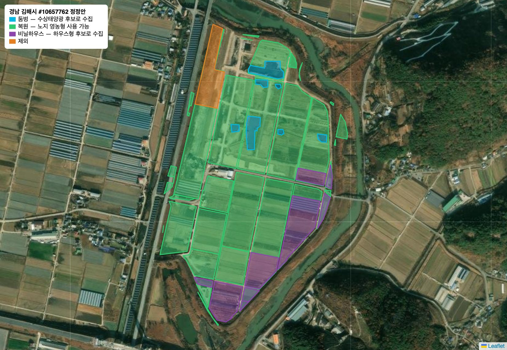
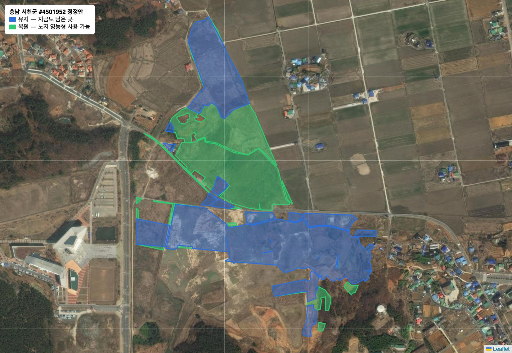
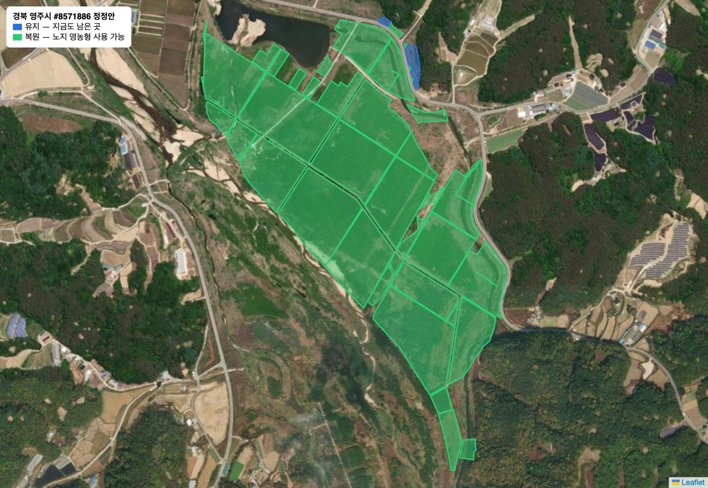
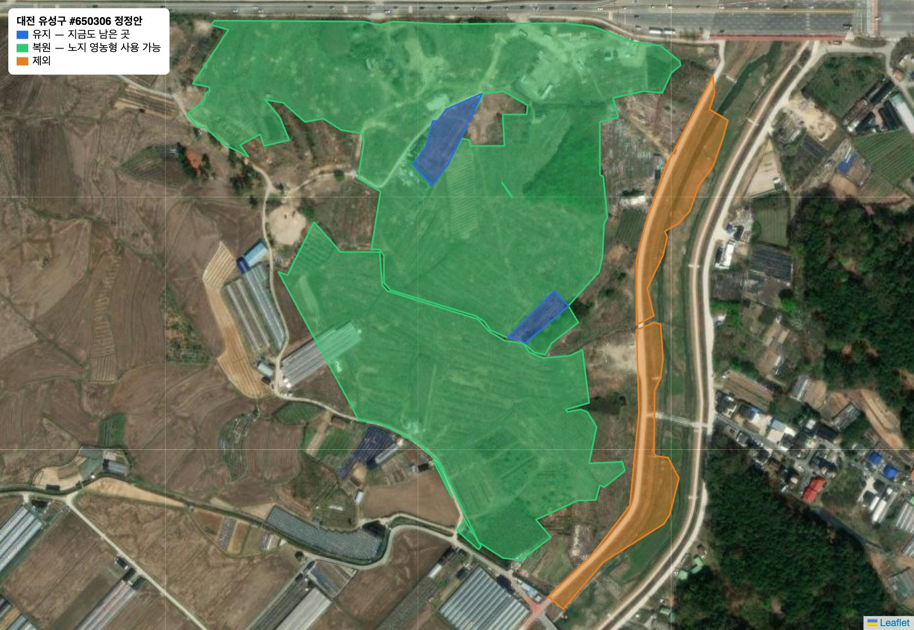
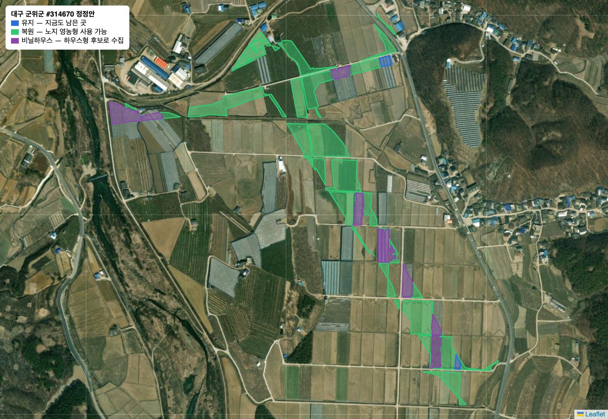
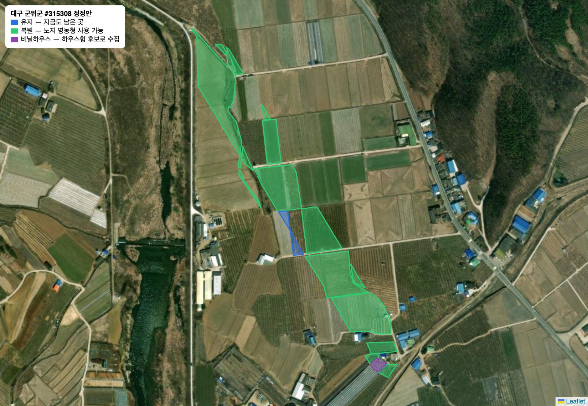

경기연구원 자문 · 비농지 제외 방법
영농형 태양광 후보 공간은 지적 장부의 지목(전·답·과수원)으로 고른 필지를 21m 안에서 묶은 것입니다. 그런데 장부에는 농지로 남아 있어도 실제로는 도로·제방·하천 둔치·건물·숲인 땅이 많았습니다. 그래서 자동 제외(도로 중심선·건물 외곽선·폭 10m 미만 띠)와 위성사진 육안 검토로 이런 땅을 뺐습니다. 1MW 이상 후보 공간 기준으로 전국 18,591 MW → 13,751 MW, 경기도는 1,946 MW → 1,097 MW로 줄었습니다.
2026-10-20 정정 반영 — 다시 보니 농지였던 6곳(아래)을 되살려 사이트 전체 수치에 반영했습니다. 1MW 이상 후보 공간의 검토 후 설치 가능 규모는 전국 13,750.6 MW에서 13,796.4 MW로 45.8 MW 늘었습니다. 비닐하우스 0.063 km²(약 2.8 MW)는 농지로 셈하고 하우스형 후보 위치로도 따로 기록했고, 둠벙 0.012 km²는 영농형 면적에서 빼고 수상태양광 후보 위치로 기록했습니다. 6곳 모두 경기도 밖이라 경기도 수치는 그대로입니다.
이 화면은 그 방법을 보여 드리고, 더 나은 방법이 있는지 여쭙기 위한 것입니다. 아래 질문 여섯 가지에 의견을 주시면 됩니다. 시간이 짧으면 1–3번을 먼저 봐 주십시오.
질문
답은 메일이나 구글 폼으로 주시면 됩니다. 수치는 법인·국공유 농지 · 특별법 시행 후 농업진흥구역에 설치할 수 있게 되는 조건 기준이며 검토 진행 중입니다.
오판 정정
처음 육안 검토에서 비농지로 뺐다가, 다시 보니 휴경지·묵은 논밭이었던 곳입니다. 질문 2의 배경입니다.





